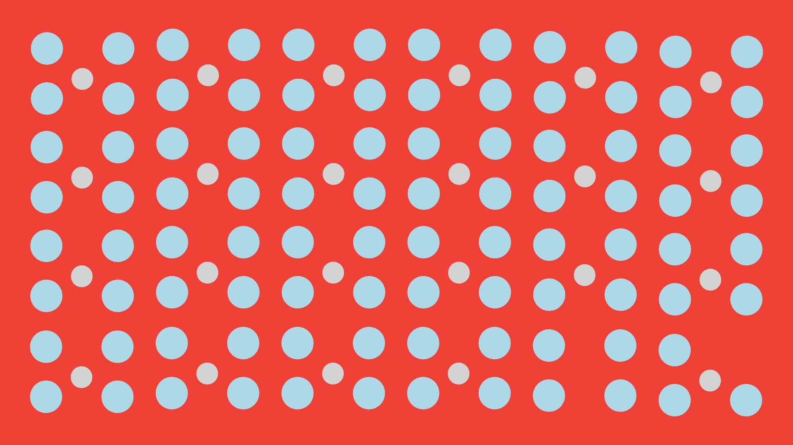
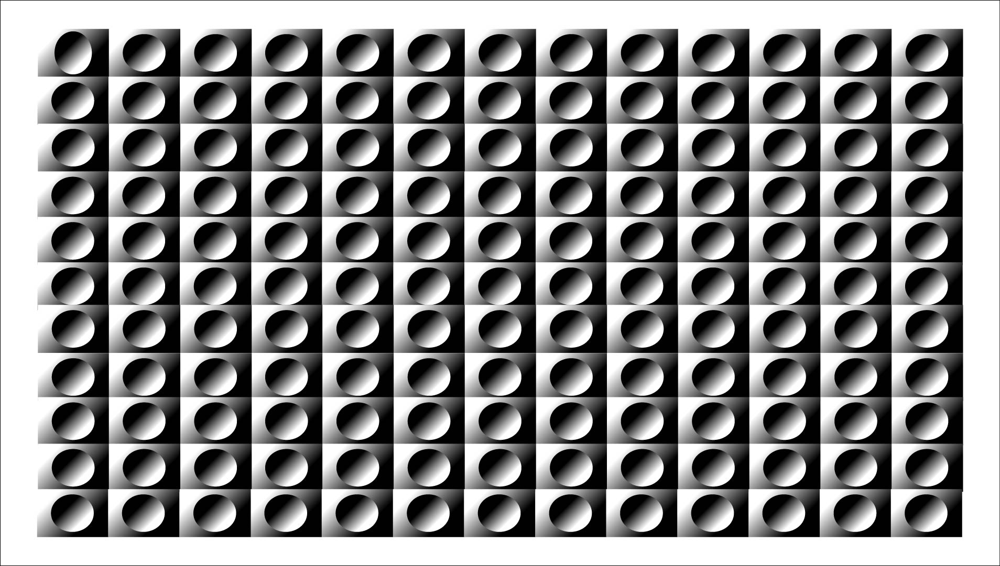
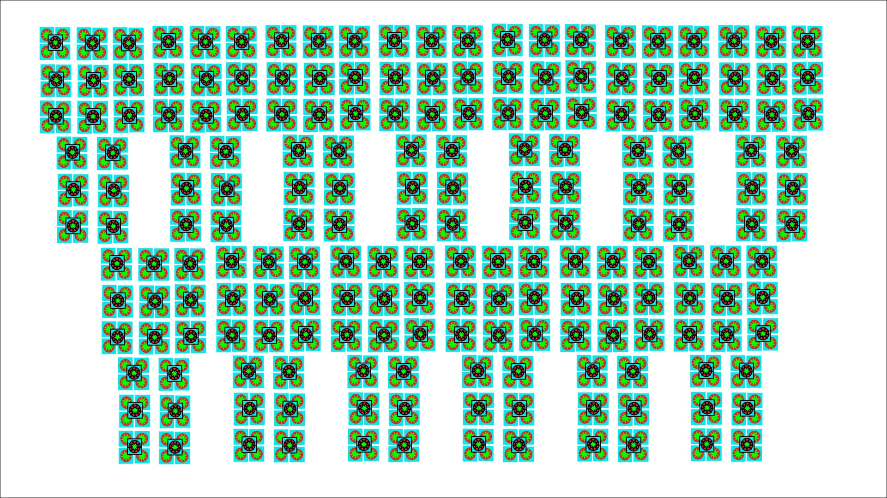
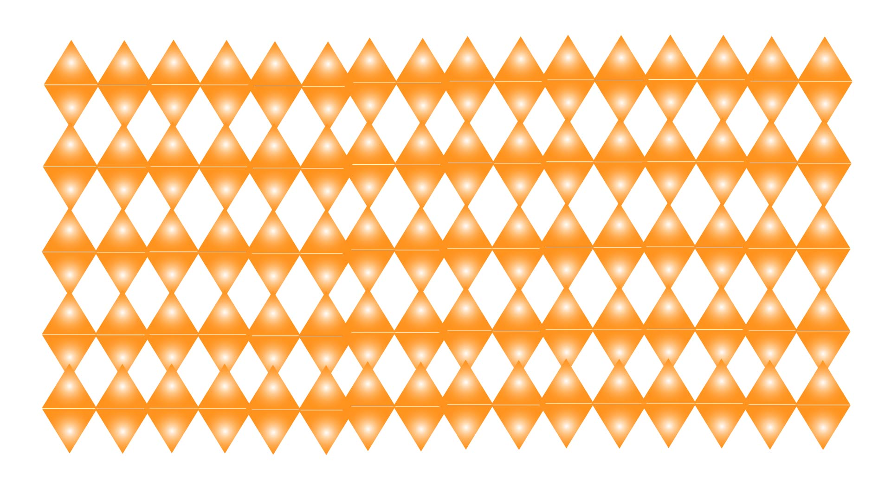
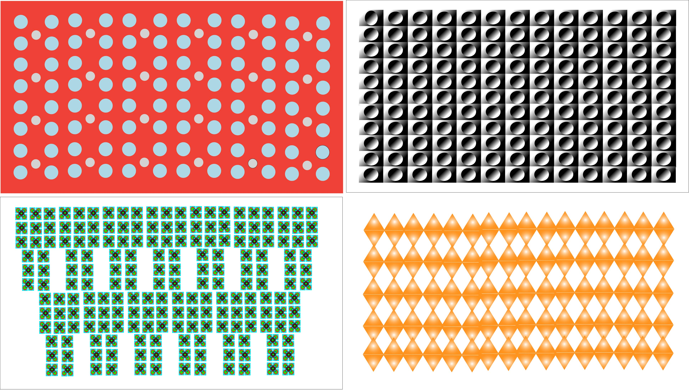

Red Dots - Movement

Repetition begins as movement. The dots create flow, suggesting energy and motion without strick order.
By Hadja Barry
This project tells a visual story about how repetition can be created through the used of simple shapes. when repeated and refined, shapes can create movement, structure, and rhythm. The narrative unfolds through color, geometry, and subtle motion.

Repetition begins as movement. The dots create flow, suggesting energy and motion without strick order.

Structure emerges through alignment. The grid introduces precision, balance, and visual stability.

Hierarchy develops as repetition becomes intentional. The stepped formation suggests construction and layered meaning.

Rhythm completes the system. The diamond pattern created warmth, consistency, and visual flow.

Together, the patterns form a complete system. What began as variation resolved into a unified visual langauage.